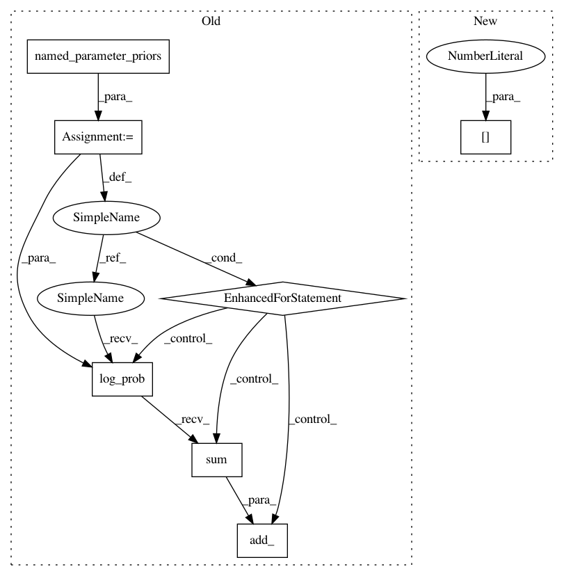

f3ed294875549679cb8d365e6604a4d4545de31b,gpytorch/mlls/variational_elbo.py,VariationalELBO,forward,#VariationalELBO#Any#Any#,26
Before Change
if self.combine_terms:
res = log_likelihood - kl_divergence
for _, param, prior in self.named_parameter_priors():
res.add_(prior.log_prob(param).sum().div(self.num_data))
for _, params, transform, prior in self.named_derived_priors():
res.add_(prior.log_prob(transform(*params)).sum().div(self.num_data))
return res
else:
After Change
else:
log_prior = torch.zeros_like(log_likelihood)
for _, prior, params, tf in self.named_priors():
lp_arg = params[0] if tf is None else tf(*params)
log_prior.add_(prior.log_prob(lp_arg).sum())
return log_likelihood, kl_divergence, log_prior.div(self.num_data)
In pattern: SUPERPATTERN
Frequency: 3
Non-data size: 7
Instances
Project Name: cornellius-gp/gpytorch
Commit Name: f3ed294875549679cb8d365e6604a4d4545de31b
Time: 2018-11-14
Author: balandat@fb.com
File Name: gpytorch/mlls/variational_elbo.py
Class Name: VariationalELBO
Method Name: forward
Project Name: cornellius-gp/gpytorch
Commit Name: f3ed294875549679cb8d365e6604a4d4545de31b
Time: 2018-11-14
Author: balandat@fb.com
File Name: gpytorch/mlls/variational_elbo.py
Class Name: VariationalELBO
Method Name: forward
Project Name: cornellius-gp/gpytorch
Commit Name: f3ed294875549679cb8d365e6604a4d4545de31b
Time: 2018-11-14
Author: balandat@fb.com
File Name: gpytorch/mlls/variational_elbo.py
Class Name: VariationalELBOEmpirical
Method Name: forward
Project Name: cornellius-gp/gpytorch
Commit Name: f3ed294875549679cb8d365e6604a4d4545de31b
Time: 2018-11-14
Author: balandat@fb.com
File Name: gpytorch/mlls/exact_marginal_log_likelihood.py
Class Name: ExactMarginalLogLikelihood
Method Name: forward